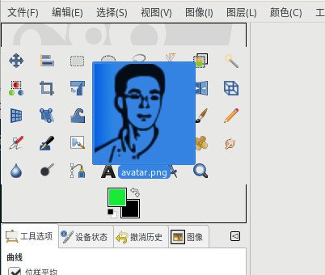

➡工具箱
这里可以设置工具箱的外观，包括是否在工具箱中显示三个常用项目。
首选项⇨界面⇨工具箱
显示GIMP标志(拖放目标)
勾选此项后，工具箱中会显示GIMP的logo。
无论是否显示GIMP的logo，您都可以从文件浏览器中拖拽一张图片到工具箱中，然后松开鼠标就可以打开该图片。
 图像拖到工具箱上后，工具箱会显示黑色边框
显示前景色和背景色
勾选此项以后，工具箱中会显示前景色和背景色图标。
显示活动笔刷、图案和渐变
勾选此项以后，工具箱中会显示活动笔刷、图案和渐变图标。
显示活动图像
勾选此项以后，工具箱中会显示当前活动图像的缩略图。
使用工具组
GIMP默认会对工具分组。组图标会使用组中的第一个工具的图标。
菜单模式
工具组中工具列表的显示方式：
点击时显示：鼠标左键点击时显示组中的工具列表。
悬停时显示：鼠标悬停在组图标上时显示组中的工具列表。
悬停时单列显示：鼠标悬停在组图标上时单列显示组中的工具列表。
驿窗注：
无论选择哪种菜单模式，都可以通过右键点击来显示组中的工具列表。
悬停时显示与菜单【首选项⇨界面⇨帮助系统】中的显示工具提示有一定显示冲突，所以最好选择点击时显示。
工具配置
在显示的工具配置列表中，左侧显示眼睛图标的工具会显示在工具箱中，没有眼睛图标则隐藏不显示。默认情况下，颜色相关工具是不显示的。
您可以移动工具组或者创建新工具组，操作会立即生效，您可以实时查看效果。